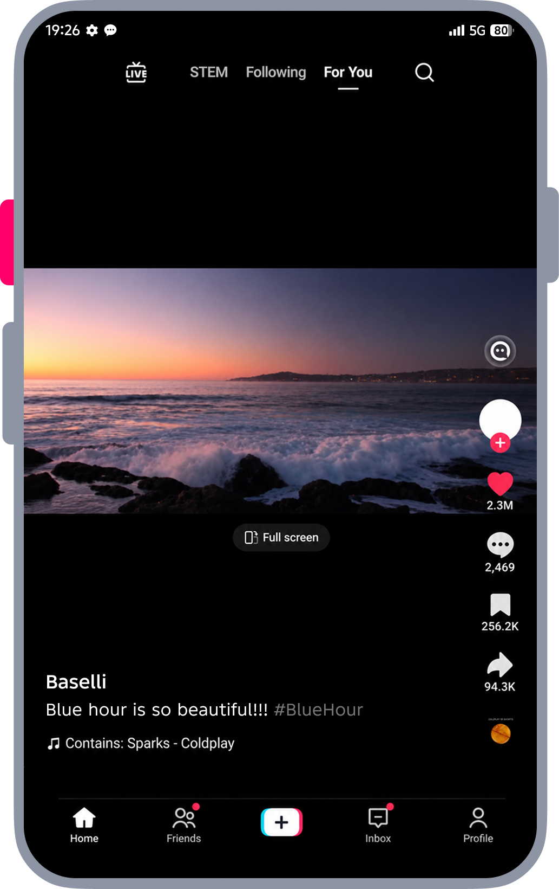
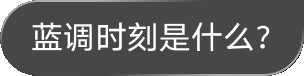
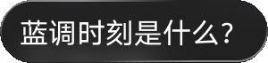
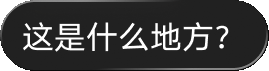
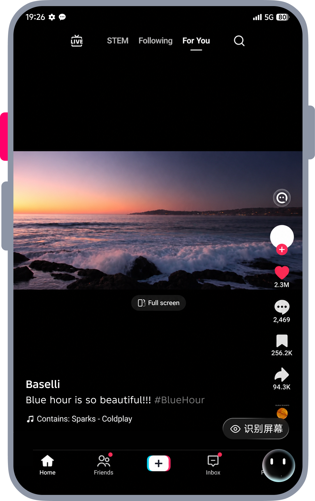

<!doctype html><html lang="zh-CN"><meta charset="utf-8"><meta name="viewport" content="width=device-width,initial-scale=1"><title>AI 伴随 · 悬浮助手</title><style>:root{--scale:.33;--w:341px;--h:541px}html{color-scheme:dark;background:transparent}body{background:transparent}
*{box-sizing:border-box}body{margin:0;background:#101416;color:#f7f7f7;font-family:-apple-system,BlinkMacSystemFont,"Arial",sans-serif}main{min-height:100dvh;display:flex;align-items:center;justify-content:center;gap:64px;padding:20px}.phone{position:relative;flex:none;width:var(--w);height:var(--h)}.stage{width:1033px;height:1640px;transform:scale(var(--scale));transform-origin:top left;position:absolute}.base{position:absolute;inset:0;width:1033px;height:1640px;pointer-events:none}.screen{position:absolute;left:44px;top:20px;width:948px;height:1600px;border-radius:100px;overflow:hidden}.inner{position:absolute;left:-44px;top:-20px;width:1033px;height:1640px}button{font:inherit;cursor:pointer;color:inherit}button:focus-visible{outline:3px solid #a4e4ef;outline-offset:4px}.trigger{position:absolute;left:0;top:368px;width:45px;height:160px;border:0;background:transparent;border-radius:20px;z-index:10}.orb{position:absolute;left:858px;top:1468px;width:112px;height:112px;border:0;padding:0;border-radius:50%;overflow:hidden;background:#000;touch-action:none;z-index:6;opacity:0;transform:translateY(30px) scale(.76);transition:opacity .5s,transform .65s cubic-bezier(.22,1,.36,1)}.orb img{position:absolute;width:1033px;height:1640px;max-width:none;left:-858px;top:-1468px;pointer-events:none}.orb.visible{opacity:1;transform:none}.orb.dragging{transition:none}.orb.docked{transform:translateX(78px)}.suggestions{position:absolute;left:728px;top:1368px;width:220px;z-index:4;transition:top .65s cubic-bezier(.22,1,.36,1);pointer-events:none}.suggestions button{display:block;text-align:left;position:relative;width:220px;min-height:70px;border:1.5px solid #aaa;border-right-color:#777;border-bottom-color:#777;border-radius:42px;background:linear-gradient(125deg,#ffffff40,#ffffff16);backdrop-filter:blur(16px);padding:12px 24px;font-size:31px;line-height:1.4;opacity:0;transform:translateY(14px);transition:opacity .4s,transform .65s,min-height .65s,border-radius .65s}.suggestions.show{pointer-events:auto}.suggestions.show button:first-child{opacity:1;transform:none}.suggestions.expanded{top:1186px}.suggestions.expanded button{border-radius:42px 42px 0 42px;min-height:114px;padding:10px 28px}.suggestions button+button{margin-top:24px;display:none}.suggestions.expanded button+button{display:block;opacity:1;transform:none;animation:fade .5s .12s both}.suggestions.hide{opacity:0;pointer-events:none;transition:opacity .2s}.panel{position:absolute;left:376px;top:122px;width:572px;height:1312px;border-radius:40px;overflow:hidden;border:1.5px solid #ffffff60;border-right-color:#ffffff20;background:linear-gradient(155deg,#090909da,#080808b5);backdrop-filter:blur(18px);opacity:0;transform:translate(100px,80px) scale(.9);transform-origin:bottom right;transition:transform .65s cubic-bezier(.22,1,.36,1),opacity .45s;z-index:3;pointer-events:none}.panel.open{opacity:1;transform:none;pointer-events:auto}.panel.dragging{transition:none}.panel h2{position:absolute;left:34px;top:33px;margin:0;font-size:38px;line-height:50px}.close{position:absolute;right:27px;top:26px;border:0;background:transparent;font-size:62px;line-height:60px;font-weight:200}.question{position:absolute;right:17px;top:110px;max-width:310px;border:1.5px solid #aaa;border-radius:42px 0 42px 42px;background:#ffffff40;padding:12px 28px;font-size:31px;line-height:48px;opacity:0;transition:opacity .4s}.panel.question-on .question{opacity:1}.answer{position:absolute;left:32px;right:34px;top:226px;font-size:31px;line-height:44px}.summary{color:#a4a5a7;font-size:28px;margin-bottom:15px;opacity:0}.summary.on{opacity:1;transition:opacity .35s}.answer p{margin:0 0 21px;min-height:0}.answer .features{margin:18px 0}.letter{opacity:0;transition:opacity .12s}.letter.on{opacity:1}.extras{opacity:0;transition:opacity .4s}.extras.on{opacity:1}.feedback{font-size:43px;color:#a6a8ad;line-height:62px;letter-spacing:8px;border-bottom:1px solid #999;margin:14px 0 18px}.related button{display:block;border:1.5px solid #aaa;border-radius:40px;background:linear-gradient(120deg,#ffffff25,#ffffff08);font-size:31px;padding:13px 20px;margin:14px 0}.service{position:absolute;bottom:174px;left:40px;right:12px;display:flex;justify-content:space-between;align-items:center;font-size:31px}.service button{border:1px solid #aaa;border-radius:42px;background:#ffffff20;padding:13px 24px;font-size:31px}.input{position:absolute;bottom:32px;left:40px;right:12px;height:112px;border:1.5px solid #999;border-radius:60px;display:flex;align-items:center;justify-content:space-between;padding:20px 15px 20px 29px;font-size:29px}.input button{border:0;border-radius:50%;width:65px;height:65px;background:#0082ff;font-size:42px}aside{width:330px}small{color:#8dabb9;letter-spacing:2px}h1{font-size:30px;font-weight:550}aside p{line-height:1.9;color:#aab7c0}nav{display:grid;gap:9px;margin:24px 0}nav button,#reset,#dock{font-size:15px;text-align:left;border:1px solid #34424a;border-radius:12px;padding:13px 18px;background:#1c252b}nav button[aria-current=step]{background:#273b42;border-color:#a3d9e3}#dock{margin-left:8px}#status{min-height:56px;font-size:13px}footer{font-size:12px;color:#6f8590}@keyframes fade{from{opacity:0;transform:translateY(10px)}to{opacity:1;transform:none}}@media(max-width:700px){main{padding:0}aside{display:none}}@media(prefers-reduced-motion:reduce){*,*:before,*:after{transition-duration:.01ms!important;animation-duration:.01ms!important}}
.panel{border:0}.panel:after{content:"";position:absolute;inset:0;border-radius:40px;padding:1.5px;pointer-events:none;background:linear-gradient(130deg,#aaa9 0%,#7776 15%,transparent 35%,transparent 68%,#9999 93%,#aaa8 100%);mask:linear-gradient(#fff 0 0) content-box,linear-gradient(#fff 0 0);mask-composite:exclude}.question{top:112px;right:18px;width:304px;height:76px;max-width:none;padding:0;border:0;background:none;border-radius:0;line-height:0}.question img{width:304px;height:76px}.feedback{height:62px;line-height:0;padding-top:5px;letter-spacing:0}.feedback img{width:218px;height:48px}.related button{padding:0;border:0;background:none;line-height:0;margin:14px 0}.related img{display:block;height:71px;width:auto}.service button{padding:0;border:0;background:none;line-height:0}.service button img{width:218px;height:71px}.input{padding:0;border:0;background:none}.input>img{position:absolute;inset:0;width:100%;height:112px}.input button{position:absolute;right:15px;top:23px;background:transparent}.answer{font-size:32px;right:34px}.service b{font-weight:600}
body{background:transparent}main{padding:0;gap:0;min-height:100dvh}aside{display:none!important}</style><main><div class="phone"><div class="stage"><button class="trigger" aria-label="点击红色按钮唤起 AI"></button><div class="screen"><div class="inner"><div class="suggestions"><button id="suggest1" aria-label="识别屏幕">◎ 识别屏幕</button><button id="suggest2">这是什么地方？</button></div><section class="panel" aria-label="AI 伴随对话"><h2>AI伴随中</h2><button class="close" aria-label="关闭对话">×</button><div class="question"></div><div class="answer"><div class="summary">✓ 生成总结</div><p id="intro"></p><p class="features" id="features"></p><p id="details"></p><div class="extras"><div class="feedback" aria-label="播放、复制、点赞、点踩"></div><div class="related"><button aria-label="蓝调时刻是什么？"></button><button aria-label="这是什么地方？"></button></div></div></div><div class="service extras"><b>服务建议</b><button aria-label="识别屏幕"></button></div><div class="input"><button aria-label="发送"></button></div></section><button class="orb" aria-label="AI 语音助手，拖至右侧边缘可收起"></button></div></div></div></div><aside><small>AI COMPANION · FLOATING MODE</small><h1>唤起、提问，轻轻收起</h1><p>点击手机左侧红色按钮唤起助手。<br>点击助手或识别标签，再选择问题。<br>将圆形助手拖向右侧边缘，收起浮窗。</p><nav aria-label="交互步骤"><button data-step="0">01　浏览视频</button><button data-step="1">02　唤起助手</button><button data-step="2">03　选择问题</button><button data-step="3">04　阅读回答</button><button data-step="4">05　贴边收起</button></nav><button id="reset">↺ 重新体验</button><button id="dock">贴边收起 →</button><p id="status" aria-live="polite"></p><footer>← → 切换步骤 · Esc 重新开始<br>支持触屏拖动 · 离线可用</footer></aside></main><script>
const $=s=>document.querySelector(s),orb=$('.orb'),panel=$('.panel'),suggest=$('.suggestions');let phase=0,timers=[],generation=0,drag=null,ready=false;const reduce=matchMedia('(prefers-reduced-motion: reduce)').matches;
var __fitRetry=0;function resize(){const vw=innerWidth||document.documentElement.clientWidth||document.body.clientWidth,vh=innerHeight||document.documentElement.clientHeight||document.body.clientHeight;if(!vw||!vh){if(__fitRetry++<600)requestAnimationFrame(resize);return}__fitRetry=0;const h=Math.min(vh,vw*1640/1033),w=h*1033/1640;document.documentElement.style.setProperty('--scale',h/1640);document.documentElement.style.setProperty('--w',w+'px');document.documentElement.style.setProperty('--h',h+'px')}addEventListener('resize',resize);addEventListener('orientationchange',()=>setTimeout(resize,180));document.addEventListener('visibilitychange',()=>{if(!document.hidden)resize()});if(window.ResizeObserver){try{new ResizeObserver(()=>resize()).observe(document.documentElement)}catch(e){}}resize();addEventListener('message',function(e){if(e&&e.data&&e.data.type==='e-resize')resize()});
function later(fn,ms){let g=generation;timers.push(setTimeout(()=>{if(g===generation)fn()},reduce?0:ms))}function clear(){generation++;timers.forEach(clearTimeout);timers=[];drag=null;orb.classList.remove('dragging');panel.classList.remove('dragging');orb.style.transform='';panel.style.transform='';panel.style.opacity='';panel.style.pointerEvents=''}
function update(){if(parent!==window)parent.postMessage({type:'e-floating-state',phase},'*');document.querySelectorAll('[data-step]').forEach(b=>b.setAttribute('aria-current',+b.dataset.step===phase?'step':'false'));$('#status').textContent=['点击左侧红色按钮开始','点击圆形助手或“识别屏幕”','点击任意问题气泡展开对话','拖动右下角助手至右侧边缘收起','点击半隐藏的助手恢复对话'][phase];$('#dock').disabled=phase!==3}
const copy={intro:'简单说：日出前、日落后，太阳在地平线下方 -4°～ -6° 的一小段时间，天空呈现均匀深邃的蓝，是风光、城市摄影的黄金时段。',features:'✦ 核心特点',details:'时间很短：一般只有 15～20 分钟，季节、纬度会影响时长；傍晚是日落之后，清晨是日出之前，一天两次杭州市生态...。'};
function textSetup(){Object.entries(copy).forEach(([id,text])=>{let p=$('#'+id);p.replaceChildren(...Array.from(text,ch=>{let span=document.createElement('span');span.className='letter';span.textContent=ch;return span}))})}textSetup();
function answer(immediate=false){panel.classList.add('question-on');if(immediate){$('.summary').classList.add('on');document.querySelectorAll('.letter,.extras').forEach(e=>e.classList.add('on'));return}later(()=>{$('.summary').classList.add('on');let chars=[...document.querySelectorAll('.letter')];chars.forEach((e,i)=>later(()=>e.classList.add('on'),i*11));later(()=>document.querySelectorAll('.extras').forEach(e=>e.classList.add('on')),chars.length*11+50)},300)}
function go(s,animate=true){clear();phase=s;orb.className='orb'+(s?' visible':'')+(s===4?' docked':'');panel.className='panel';suggest.className='suggestions';$('.summary').classList.remove('on');document.querySelectorAll('.letter,.extras').forEach(e=>e.classList.remove('on'));$('#suggest1').textContent=s===1?'◎ 识别屏幕':'蓝调时刻是什么？';if(s===1)suggest.classList.add('show');if(s===2)suggest.classList.add('show','expanded');if(s===3){panel.classList.add('open');later(()=>answer(!animate),animate?180:0)}update()}
$('.trigger').onclick=()=>go(1);$('#suggest1').onclick=()=>phase===1?go(2):go(3);$('#suggest2').onclick=()=>go(3);$('.close').onclick=()=>go(2);document.querySelectorAll('.related button').forEach(b=>b.onclick=()=>go(3));$('#reset').onclick=()=>go(0);document.querySelectorAll('[data-step]').forEach(b=>b.onclick=()=>go(+b.dataset.step));
function dock(from=0){clear();phase=4;panel.classList.remove('dragging');panel.style.transform='translateX(650px)';panel.style.opacity='0';panel.style.pointerEvents='none';orb.classList.add('visible','docked');orb.style.transform='';suggest.classList.remove('show');update();later(()=>{panel.classList.remove('open');panel.style.pointerEvents=''},700)}$('#dock').onclick=()=>dock();
orb.addEventListener('pointerdown',e=>{if(phase!==3)return;drag={x:e.clientX,y:e.clientY,dx:0,dy:0};orb.setPointerCapture(e.pointerId)});orb.addEventListener('pointermove',e=>{if(!drag)return;let scale=$('.stage').getBoundingClientRect().width/1033;drag.dx=(e.clientX-drag.x)/scale;drag.dy=(e.clientY-drag.y)/scale;if(Math.abs(drag.dx)+Math.abs(drag.dy)<5)return;orb.classList.add('dragging');panel.classList.add('dragging');let dx=Math.max(-70,Math.min(90,drag.dx)),dy=Math.max(-200,Math.min(36,drag.dy)),p=Math.max(0,Math.min(1,dx/78));orb.style.transform=`translate(${dx}px,${dy}px)`;panel.style.transform=`translateX(${p*650}px)`;panel.style.opacity=1-p*.22});orb.addEventListener('pointerup',()=>{if(!drag){if(phase===1)go(2);else if(phase===2||phase===4)go(3);return}let d=drag;drag=null;orb.classList.remove('dragging');panel.classList.remove('dragging');if(d.dx>40)dock();else{orb.style.transform='';panel.style.transform='';panel.style.opacity=''}});orb.addEventListener('pointercancel',()=>{drag=null;orb.classList.remove('dragging');panel.classList.remove('dragging');orb.style.transform='';panel.style.transform='';panel.style.opacity=''});orb.addEventListener('keydown',e=>{if(e.key==='Enter'||e.key===' '){e.preventDefault();if(phase===1)go(2);else if(phase===2||phase===4)go(3)}});document.addEventListener('keydown',e=>{if(e.key==='Escape')go(0);if(e.key==='ArrowRight')go(Math.min(4,phase+1));if(e.key==='ArrowLeft')go(Math.max(0,phase-1))});window.demo={go,dock,get phase(){return phase}};
addEventListener('message',e=>{if(e.source!==parent||e.data?.type!=='e-floating-go')return;let target=e.data.phase;if(!Number.isInteger(target)||target<0||target>4)return;if(target!==phase)go(target)});
addEventListener('keydown',e=>{if(/^[1-5dDekKpPrR]$/.test(e.key)){parent.postMessage({type:'e-floating-key',key:e.key},'*');e.preventDefault()}});
go(0);
</script></html>
